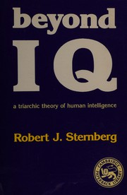

Beyond IQ: A Triarchic Theory of Human Intelligence
Book·Robert J. Sternberg, 1985·超越智商

Sternberg argues that intelligence has three aspects, analytical, creative and practical, and that it is more than what IQ tests measure.
- Author
- Robert J. Sternberg
- Year
- 1985
- Difficulty
- Intermediate
- Kind
- Primary text
- Schools
- Multiple Intelligences
- Core theories
- Triarchic Theory of Intelligence
Editions
- English edition Beyond IQ: A Triarchic Theory of Human Intelligence Robert J. Sternberg · Cambridge University Press, first edition · 1985 Open Library ↗